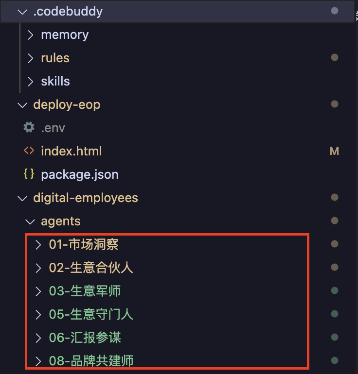
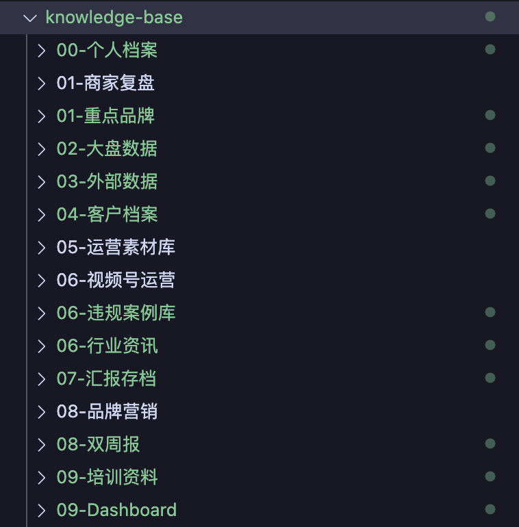
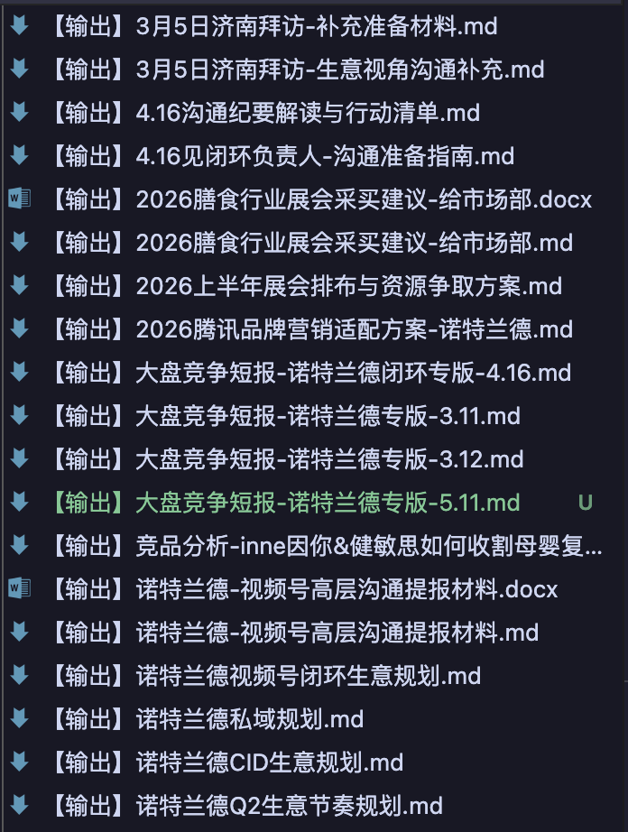

AMS 商品消费业务部 · 食品饮料一中心 · 膳食行业直客
carmennwu
images-v0.6/checkin-qr.png
AMS 商品消费业务部 · 食品饮料一中心 · 膳食行业直客
carmennwu
【顶层职责】 帮膳食行业头部商家 把生意做大、做扎实 │ ┌─────────┴─────────┐ ▼ ▼ 【主战场】 【延伸场】 腾讯内部生意 辐射全域生意 (投放/小店/直播) (品牌资产沉淀) │ │ └─────────┬─────────┘ │ ┌─────────┴─────────┐ ▼ ▼ 经营力分支 内容力分支 (生意经营提升) (公域影响力提升) │ │ 服务 KPI： 服务 KPI： ① 头部消耗 ③ 品牌大场 ② ARPU 冲高 ④ 内容力专项 ⑤ 经营力专项 (互选/IP/直播) ⑦ 新玩法/新模式 ⑧ 老客留存 │ │ └─────────┬─────────┘ ▼ 【贯穿两个分支的横轴】 行业发展风控把关
① 看盘 → ② 选战 → ③ 备战 → ④ 打仗 → ⑤ 收数
│
▼
⑧ 沉淀回灌 ← ⑦ 汇报 ← ⑥ 复盘 ←──────────┘
│
└─→ 喂回 ① 看盘（形成闭环）
| 步骤 | 通用版（任何岗位） | 我的版（销售岗） | 频次 |
|---|---|---|---|
| ① 看盘 | 打开数据 · 抓今天异常 | 大盘消耗 / 8 KPI / 竞品 / 客户日耗 | 每天 |
| ② 选战 | 本周做什么 · 拍优先级 | 打哪个客户 / 什么议题 / 投多少 | 每周一 |
| ③ 备战 | 关键会议/汇报前的准备 | 客户档案 / 定位卡 / 作战图 / 独白 | 见客前 1-2 天 |
| ④ 打仗 | 见关键人 · 现场交付 | 见客户 / 拉通 / 节点大场 / 救场 | 全周高频 |
| ⑤ 收数 | 收数据出报表 | 双周 CSV / 客户日耗 / 归因 / GMV | 每双周日 |
| ⑥ 复盘 | 为什么这样 · 串因果 | 谁起了 / 谁跌了 / 为什么 / 学到什么 | 每双周日晚 |
| ⑦ 汇报 | 写周报/月报 · 对外讲故事 | 双周报 / 月会 / 临时问 / 客户短报 | 每双周一 |
| ⑧ 沉淀 | 写方法论 · 给下次用 | 方法论入库 / 档案更新 / Memory / 规则 | 每月末 |
┌──── 日常作战段 ────┬── 双周交付段 ──┬── 月度沉淀 ──┐
周一 周二~周五 │ 双周六 双周日 双周一│ 月最后一周
▼ ▼ │ ▼ ▼ ▼ │ ▼
① 看盘 → ② 选战 → ③ 备战 → ④ 打仗 → ⑤ 收数 → ⑥ 复盘 → ⑦ 汇报
│
▲ ▼
└──── 喂回 ① 看盘 · 形成闭环 ←─ ⑧ 沉淀回灌 ←──────────┘
| 工作流步骤 | 通用版 AI 帮手（任何岗位都能搭） | 我搭的 Agent（销售岗实例） |
|---|---|---|
| ① 看盘 | 数据小助手 · 每天扫异常 | 01 市场洞察 + 03 生意军师 |
| ② 选战 | 优先级助手 · 拍本周做什么 | 02 生意合伙人 |
| ③ 备战 | 备战助手 · 出一页纸资料 | 02 生意合伙人 + 08 品牌共建师 |
| ④ 打仗 | 现场副驾 · 救场剧本 + 合规扫雷 | 05 生意守门人 + 02 生意合伙人 |
| ⑤ 收数 | 收数助手 · 一键直出报表 | 03 生意军师（脚本化宽表） |
| ⑥ 复盘 | 复盘助手 · 串因果链 | 03 生意军师 + 06 汇报参谋 |
| ⑦ 汇报 | 汇报助手 · 格式化稿 + 红线扫 | 06 汇报参谋（双周报+月会） |
| ⑧ 沉淀 | 你自己来 · AI 只能辅助 · 不代写战略 | Carmen 主导 · AI 不接手 |


